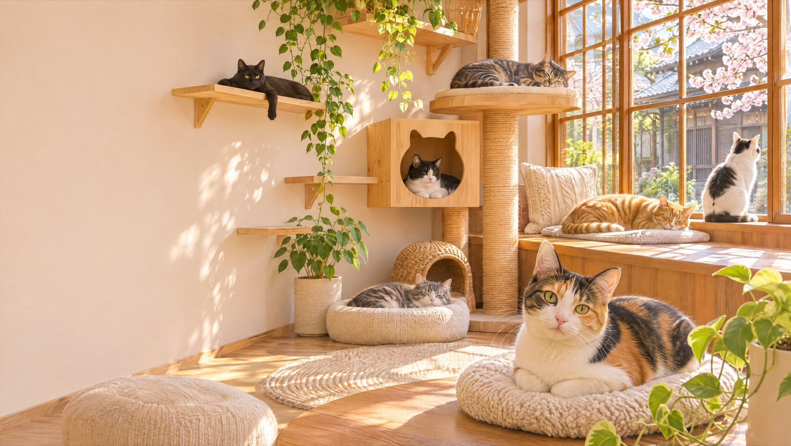
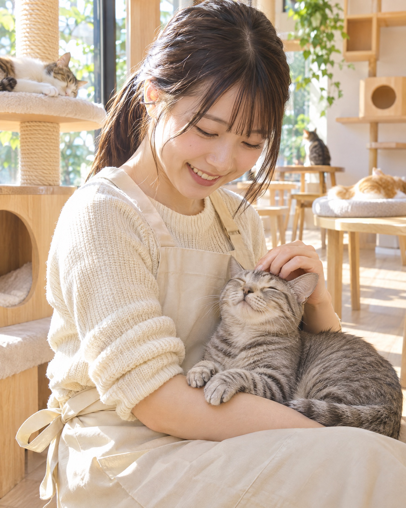
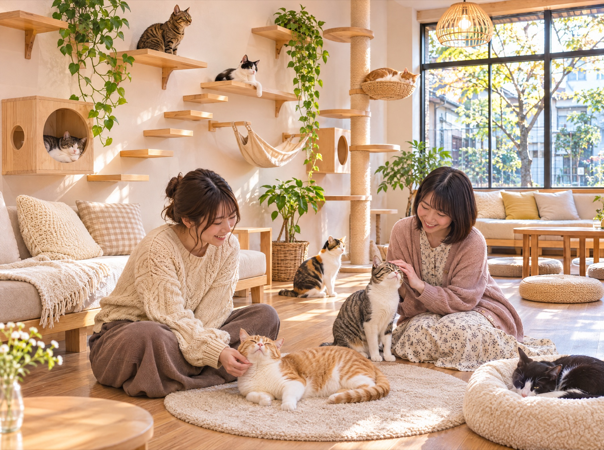

お店のこと
カフェで過ごす時間が、
だれかの家族さがしになる。
ひだまりのいえは、地域の保護団体と一緒に運営する保護猫カフェです。お店でかかる入場料の一部は、猫たちのごはん代や病院代になります。
- 124匹
これまでに新しい家族のもとへ
（運営団体の実績・サンプル） - 全頭
ワクチン接種・不妊去勢手術ずみ
- 14匹
いま、お店でくらしています
ねこたち
いまお店にいる子たち
カードを押すと、その子の性格がわかります。
※猫の名前・年齢・性格はサンプルです（写真はAI生成）。
里親になるには
気になる子がいたら
- 1
お店で会う
何度か会いに来て、相性を確かめてください。
- 2
スタッフに相談
暮らし方やおうちの様子を伺います。
- 3
おためし同居
2週間ほど、おうちで一緒に暮らしてみます。
- 4
正式に家族へ
譲渡の契約をして、新しい暮らしのはじまりです。

料金・営業時間・アクセス
ご来店の前に
- 料金
- 1時間 1,200円（ワンドリンクつき）／延長30分 500円
小学生以下 600円 - 営業時間
- 11:00〜19:00（最終入店 18:00）
- 定休日
- 火曜日
- アクセス
- 〇〇駅 南口から歩いて5分（架空）
- おねがい
- 猫を抱き上げるのは、スタッフに声をかけてからにしてください。
※料金・営業時間はサンプルです（税込表示の例）。
お問い合わせ
オープンのお知らせを、
いちばんに受け取る。
里親のご相談、ボランティア、取材のお問い合わせもこちらから。
※サンプルのため、ボタンは動きません。